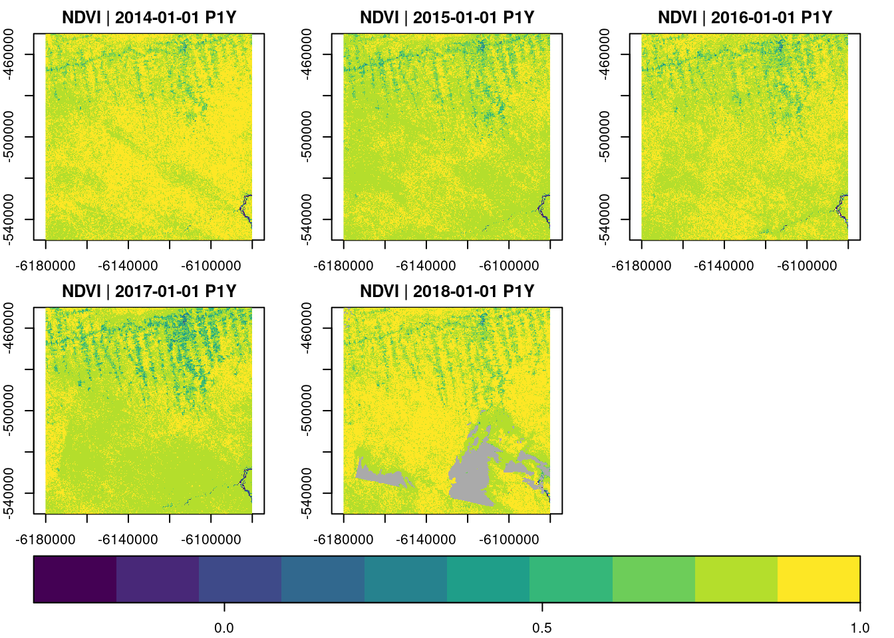
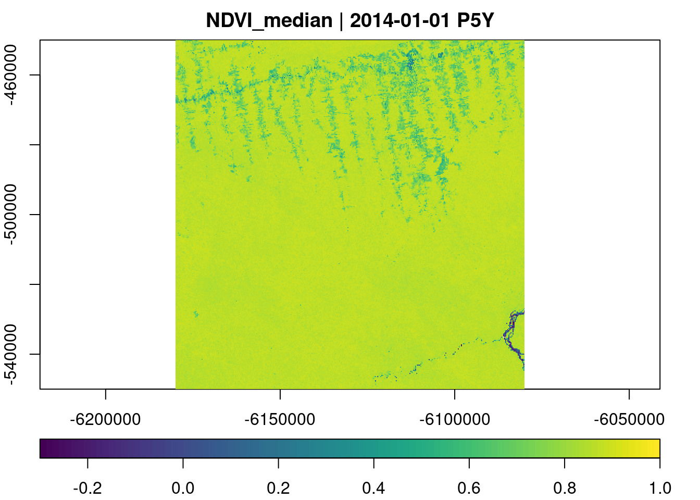
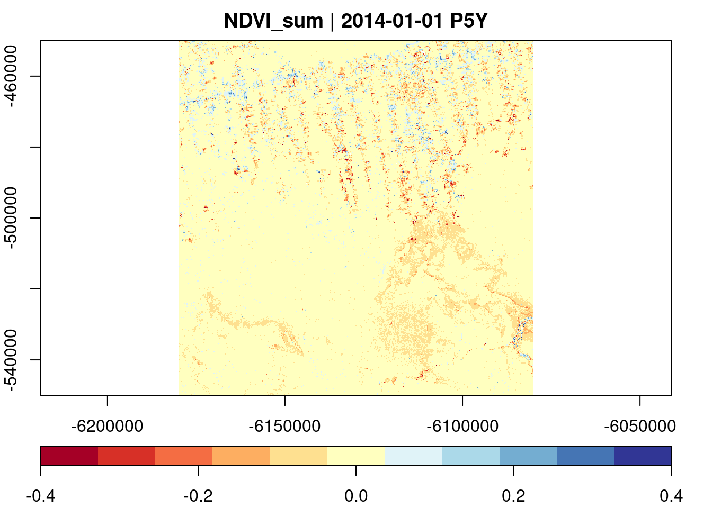

Introduction to gdalcubes using local Landsat 8 imagery
This document is based on the tutorial “Processing Large Satellite Image Collections as Data Cubes with the gdalcubes R package”, presented ad OpenGeoHub Summer School 2019 (see https://github.com/appelmar/opengeohub_summerschool2019).
Outline
Part I: Creating, Visualizing, and Exporting Data Cubes from Satellite Image Collections (45 min demonstration, 15 min practical exercises)
Part II: On-the-fly Processing of Data Cubes (45 min demonstration, 15 min practical exercises)
All the material of this tutorial is online at GitHub, including R markdown sources, rendered HTML output, and solutions to the practical exercises. However, the repository does not contain the data used in the tutorial due to its size.
Sample Data
Most parts of the tutorial will use a collection of 180 Landsat 8 surface reflectance images, covering a small part of the Brazilian Amazon forest. The live demonstration will use the full resolution dataset (62 gigabytes compressed; > 200 gigabytes unzipped; available here), whereas we will use a downsampled version of the same dataset with coarse spatial resolution (300 meter pixel size; 740 megabytes compressed; 2 gigabytes unzipped) in the practical part (available here).
After downloading whichever version of the dataset, make sure to unzip it. The following R code will download the low resolution version to your current working directory and unzip it.
Part I: Creating, Visualizing, and Exporting Data Cubes from Satellite Image Collections
The Problem
Raw satellite imagery is mostly distributed as collection of files, whether on download portals of space agencies, or in cloud computing environments (Amazon Web Services, Google Cloud, …). If we want to analyze more than a single image, or even images from multiple satellites, we quickly run into the following challenges:
- spectral bands at different spatial resolutions
- spatially overlapping images
- irregular time series for pixels from different tiles (or in overlapping areas)
- different spatial reference systems of images
- different data formats and structures
To do time series analysis, process larger areas, and / or combine datasets from different sensors / satellites, we first must restructure our data, e.g. as a data cube with a single spatial reference system, regular pixel sizes, both in time and in space.
Notice that what we call cube is actually not really a cube. It has (up to) four dimensions, and the lengths of the dimensions may be different. Therefore, four dimensional regular raster data cubes also cover simple time series, multiband time series, grayscale images, multispectral images, and time-series of images.
Existing Tools (with a focus on R)
GDAL, the Geospatial Data Abstraction Library is a software library reading and writing all relevant raster (and vector) data formats, and providing functions to warp (reproject, rescale, resample, and crop) multiband raster images. It has a three dimensional (space, bands) raster data model and solves some of the problems (data formats, image warping). However, it does not know about the organization of data products, and time. GDAL is written in C / C++ but the rgdalpackage (Bivand, Keitt, and Rowlingson 2019) provides an easy to use interface in R.
There are further R packages to process satellite imagery:
raster (Hijmans 2019)
- well established, stable, reliable
- three-dimensional only, no multispectral AND multitemporal stacks
- chaining operations on rasters (stacks / bricks) always writes intermediate results to disk
- works on full resolution data, requires additional steps e.g. to try out things on lower resolution
- currently being rewritten (see https://github.com/rspatial/terra)
stars (Pebesma 2019) (see parallel session)
- arbitrary dimensions
- assumes a data cube as input (does not do spatial mosaicing, temporal aggregation)
- has vector data cubes
- lazy evaluation approach, compute only the pixels you see.
First Steps with gdalcubes
gdalcubes is a relatively new R package that mostly wraps functions written in C++. It uses GDAL to read, write, and warp images, but understands date/time and how complex satellite image data products are organized. To get started, please install the gdalcubes package from CRAN with:
We can load the package and make sure that all computations later in this tutorial use up to 8 parallel processes with:
Please notice that this tutorial needs package version >= 0.6.0, which you can check by running:
Creating an Image Collection
To analyze our sample dataset, we must first tell gdalcubes, which files belong to the image collection, and where to find them.
At first, we simply list (recursively) all GeoTIFF files in the directory with the Landsat 8 images:
L8.files = list.files("L8_Amazon", pattern = ".tif", recursive = TRUE, full.names = TRUE)
head(L8.files, 15) [1] "L8_Amazon/LC082260632014071901T1-SC20190715045926/LC08_L1TP_226063_20140719_20170421_01_T1_pixel_qa.tif"
[2] "L8_Amazon/LC082260632014071901T1-SC20190715045926/LC08_L1TP_226063_20140719_20170421_01_T1_radsat_qa.tif"
[3] "L8_Amazon/LC082260632014071901T1-SC20190715045926/LC08_L1TP_226063_20140719_20170421_01_T1_sr_aerosol.tif"
[4] "L8_Amazon/LC082260632014071901T1-SC20190715045926/LC08_L1TP_226063_20140719_20170421_01_T1_sr_band1.tif"
[5] "L8_Amazon/LC082260632014071901T1-SC20190715045926/LC08_L1TP_226063_20140719_20170421_01_T1_sr_band2.tif"
[6] "L8_Amazon/LC082260632014071901T1-SC20190715045926/LC08_L1TP_226063_20140719_20170421_01_T1_sr_band3.tif"
[7] "L8_Amazon/LC082260632014071901T1-SC20190715045926/LC08_L1TP_226063_20140719_20170421_01_T1_sr_band4.tif"
[8] "L8_Amazon/LC082260632014071901T1-SC20190715045926/LC08_L1TP_226063_20140719_20170421_01_T1_sr_band5.tif"
[9] "L8_Amazon/LC082260632014071901T1-SC20190715045926/LC08_L1TP_226063_20140719_20170421_01_T1_sr_band6.tif"
[10] "L8_Amazon/LC082260632014071901T1-SC20190715045926/LC08_L1TP_226063_20140719_20170421_01_T1_sr_band7.tif"
[11] "L8_Amazon/LC082260632014082001T1-SC20190715051515/LC08_L1TP_226063_20140820_20170420_01_T1_pixel_qa.tif"
[12] "L8_Amazon/LC082260632014082001T1-SC20190715051515/LC08_L1TP_226063_20140820_20170420_01_T1_radsat_qa.tif"
[13] "L8_Amazon/LC082260632014082001T1-SC20190715051515/LC08_L1TP_226063_20140820_20170420_01_T1_sr_aerosol.tif"
[14] "L8_Amazon/LC082260632014082001T1-SC20190715051515/LC08_L1TP_226063_20140820_20170420_01_T1_sr_band1.tif"
[15] "L8_Amazon/LC082260632014082001T1-SC20190715051515/LC08_L1TP_226063_20140820_20170420_01_T1_sr_band2.tif" [1] 2.012341We see that every image is represented by a directory, with individual files for spectral bands. We can then add all images to an image collection with:
L8.col = create_image_collection(L8.files, format = "L8_SR", out_file = "L8.db")
# L8.col = image_collection("L8.db")
L8.colImage collection object, referencing 180 images with 10 bands
Images:
name left top bottom
1 LC08_L1TP_226063_20140719_20170421_01_T1 -54.15776 -3.289862 -5.392073
2 LC08_L1TP_226063_20140820_20170420_01_T1 -54.16858 -3.289828 -5.392054
3 LC08_L1GT_226063_20160114_20170405_01_T2 -54.16317 -3.289845 -5.392064
4 LC08_L1TP_226063_20160724_20170322_01_T1 -54.16317 -3.289845 -5.392064
5 LC08_L1TP_226063_20170609_20170616_01_T1 -54.17399 -3.289810 -5.392044
6 LC08_L1TP_226063_20170711_20170726_01_T1 -54.15506 -3.289870 -5.392083
right datetime srs
1 -52.10338 2014-07-19T00:00:00 EPSG:32622
2 -52.11418 2014-08-20T00:00:00 EPSG:32622
3 -52.10878 2016-01-14T00:00:00 EPSG:32622
4 -52.10878 2016-07-24T00:00:00 EPSG:32622
5 -52.11958 2017-06-09T00:00:00 EPSG:32622
6 -52.09798 2017-07-11T00:00:00 EPSG:32622
[ omitted 174 images ]
Bands:
name offset scale unit nodata image_count
1 AEROSOL 0 1 180
2 B01 0 1 -9999.000000 180
3 B02 0 1 -9999.000000 180
4 B03 0 1 -9999.000000 180
5 B04 0 1 -9999.000000 180
6 B05 0 1 -9999.000000 180
7 B06 0 1 -9999.000000 180
8 B07 0 1 -9999.000000 180
9 PIXEL_QA 0 1 180
10 RADSAT_QA 0 1 180This opens all provided files once, reads some relevant metadata (spatial extent, reference system, recording date/time, and how the file relates to the spectral bands of the data product). The format argument describes, how this information can be extracted. The gdalcubes package comes with a set of predefined image collection formats for particular data products. We can list available formats with:
CHIRPS_v2_0_daily_p05_tif | Image collection format for CHIRPS v 2.0 daily
| global precipitation dataset (0.05 degrees
| resolution) from GeoTIFFs, expects list of .tif
| or .tif.gz files as input. [TAGS: CHIRPS,
| precipitation]
CHIRPS_v2_0_monthly_p05_tif | Image collection format for CHIRPS v 2.0 monthly
| global precipitation dataset (0.05 degrees
| resolution) from GeoTIFFs, expects list of .tif
| or .tif.gz files as input. [TAGS: CHIRPS,
| precipitation]
ESA_CCI_SM_ACTIVE | Collection format for ESA CCI soil moisture
| active product (version 4.7) [TAGS: Soil
| Moisture, ESA, CCI]
ESA_CCI_SM_PASSIVE | Collection format for ESA CCI soil moisture
| passive product (version 4.7) [TAGS: Soil
| Moisture, ESA, CCI]
GPM_IMERG_3B_DAY_GIS_V06A | Collection format for daily
| IMERG_3B_DAY_GIS_V06A data [TAGS: Precipitation,
| GPM, IMERG]
L8_L1TP | Collection format for Landsat 8 Level 1 TP
| product [TAGS: Landsat, USGS, Level 1, NASA]
L8_SR | Collection format for Landsat 8 surface
| reflectance product [TAGS: Landsat, USGS, Level
| 2, NASA, surface reflectance]
MxD09GA | Collection format for selected bands from the
| MODIS MxD09GA (Aqua and Terra) product [TAGS:
| MODIS, surface reflectance]
MxD10A2 | Collection format for selected bands from the
| MODIS MxD10A2 (Aqua and Terra) v006 Snow Cover
| product [TAGS: MODIS, Snow Cover]
MxD11A1 | Collection format for selected bands from the
| MODIS MxD11A2 (Aqua and Terra) v006 Land Surface
| Temperature product [TAGS: MODIS, LST]
MxD11A2 | Collection format for selected bands from the
| MODIS MxD11A2 (Aqua and Terra) v006 Land Surface
| Temperature product [TAGS: MODIS, LST]
MxD13A2 | Collection format for selected bands from the
| MODIS MxD13A2 (Aqua and Terra) product [TAGS:
| MODIS, VI, NDVI, EVI]
MxD13A3 | Collection format for selected bands from the
| MODIS MxD13A3 (Aqua and Terra) product [TAGS:
| MODIS, VI, NDVI, EVI]
MxD13Q1 | Collection format for selected bands from the
| MODIS MxD13Q1 (Aqua and Terra) product [TAGS:
| MODIS, VI, NDVI, EVI]
MxD14A2 | Collection format for the MODIS MxD14A2 (Aqua
| and Terra) product [TAGS: MODIS, Fire]
PlanetScope_3B_AnalyticMS_SR | Image collection format for PlanetScope 4-band
| scenes [TAGS: PlanetScope, BOA, Surface
| Reflectance]
Sentinel2_L1C | Image collection format for Sentinel 2 Level 1C
| data as downloaded from the Copernicus Open
| Access Hub, expects a list of file paths as
| input. The format works on original ZIP
| compressed as well as uncompressed imagery.
| [TAGS: Sentinel, Copernicus, ESA, TOA]
Sentinel2_L1C_AWS | Image collection format for Sentinel 2 Level 1C
| data in AWS [TAGS: Sentinel, Copernicus, ESA,
| TOA]
Sentinel2_L2A | Image collection format for Sentinel 2 Level 2A
| data as downloaded from the Copernicus Open
| Access Hub, expects a list of file paths as
| input. The format should work on original ZIP
| compressed as well as uncompressed imagery.
| [TAGS: Sentinel, Copernicus, ESA, BOA, Surface
| Reflectance]
Sentinel2_L2A_THEIA | Image collection format for Sentinel 2 Level 2A
| data as downloaded from Theia. [TAGS: Sentinel,
| ESA, Flat Reflectance, Theia]The number of available formats is still rather limited, but continues to grow and is extensible (using add_collection_format()). In fact, a collection format is a single JSON (JavaScript Object Notation) file, describing some rules how to extract e.g. date/time, and bands from filenames (examples at https://github.com/appelmar/gdalcubes_formats). Writing collection formats for your own non-standard datasets is not too difficult and documented here.
In our example, we used the predefined format "L8_SR" for Landsat 8 surface reflectance data as downloaded from the USGS portal.
The creation of image collections is typically done only once. We can add images to an existing collection with add_images().
We can extract the spatiotemporal extent of the collection with:
Defining a Data Cube View: A Virtual Data Cube
We can define a target data cube by its geometry, i.e., the spatiotemporal extent, the spatial reference system, the spatial size, and the temporal duration of cells. We call this a data cube view, i.e. the geometry of a cube without connecting it to any data. To create a data cube view, we can use the cube_view() function:
# Coarse resolution overview
v.overview.500m = cube_view(srs="EPSG:3857", extent=L8.col, dx=500, dy=500, dt = "P1Y", resampling="average", aggregation="median")
v.overview.500mA data cube view object
Dimensions:
low high count pixel_size
t 2013-01-01 2019-12-31 7 P1Y
y -763764.387686915 -205264.387686915 1117 500
x -6582280.06164712 -5799280.06164712 1566 500
SRS: "EPSG:3857"
Temporal aggregation method: "median"
Spatial resampling method: "average"v.subarea.60m = cube_view(extent=list(left=-6180000, right=-6080000, bottom=-550000, top=-450000,
t0="2014-01-01", t1="2018-12-31"), dt="P1Y", dx=60, dy=60, srs="EPSG:3857",
aggregation = "median", resampling = "average")
v.subarea.60mA data cube view object
Dimensions:
low high count pixel_size
t 2014-01-01 2018-12-31 5 P1Y
y -550010 -449990 1667 60
x -6180010 -6079990 1667 60
SRS: "EPSG:3857"
Temporal aggregation method: "median"
Spatial resampling method: "average"A data cube view object
Dimensions:
low high count pixel_size
t 2014-01-01 2018-12-31 1826 P1D
y -550010 -449990 1667 60
x -6180010 -6079990 1667 60
SRS: "EPSG:3857"
Temporal aggregation method: "median"
Spatial resampling method: "average"Notice that the data cube view does not contain any information on bands, because it is independent from particular data products.
Creating Data Cubes
Having defined an image collection, and a data cube view, a data cube is simply the combination of the two. We can create a data cube with the raster_cube() function:
A data cube proxy object
Dimensions:
low high count pixel_size chunk_size
t 2013-01-01 2019-12-31 7 P1Y 1
y -763764.387686915 -205264.387686915 1117 500 384
x -6582280.06164712 -5799280.06164712 1566 500 384
Bands:
name offset scale nodata unit
1 AEROSOL 0 1 NaN
2 B01 0 1 NaN
3 B02 0 1 NaN
4 B03 0 1 NaN
5 B04 0 1 NaN
6 B05 0 1 NaN
7 B06 0 1 NaN
8 B07 0 1 NaN
9 PIXEL_QA 0 1 NaN
10 RADSAT_QA 0 1 NaN A data cube proxy object
Dimensions:
low high count pixel_size chunk_size
t 2014-01-01 2018-12-31 5 P1Y 1
y -550010 -449990 1667 60 448
x -6180010 -6079990 1667 60 448
Bands:
name offset scale nodata unit
1 AEROSOL 0 1 NaN
2 B01 0 1 NaN
3 B02 0 1 NaN
4 B03 0 1 NaN
5 B04 0 1 NaN
6 B05 0 1 NaN
7 B06 0 1 NaN
8 B07 0 1 NaN
9 PIXEL_QA 0 1 NaN
10 RADSAT_QA 0 1 NaN A data cube proxy object
Dimensions:
low high count pixel_size chunk_size
t 2014-01-01 2018-12-31 1826 P1D 1
y -550010 -449990 1667 60 448
x -6180010 -6079990 1667 60 448
Bands:
name offset scale nodata unit
1 AEROSOL 0 1 NaN
2 B01 0 1 NaN
3 B02 0 1 NaN
4 B03 0 1 NaN
5 B04 0 1 NaN
6 B05 0 1 NaN
7 B06 0 1 NaN
8 B07 0 1 NaN
9 PIXEL_QA 0 1 NaN
10 RADSAT_QA 0 1 NaN This is very cheap, simply returning proxy objects, but not reading any image data. The package delays the computational intensive parts as much as possible (e.g., until users call plot()). The returned object knows about the bands of the data product. We can use select_bands() to get only the bands we are interested in:
A data cube proxy object
Dimensions:
low high count pixel_size chunk_size
t 2013-01-01 2019-12-31 7 P1Y 1
y -763764.387686915 -205264.387686915 1117 500 384
x -6582280.06164712 -5799280.06164712 1566 500 384
Bands:
name offset scale nodata unit
1 B02 0 1 NaN
2 B03 0 1 NaN
3 B04 0 1 NaN There are some utility functions on data cubes, including:
Plotting Data Cubes
The plot function can be used to visualize data cubes. Calling plot() will start reading and processing the data:
For a simple RGB plot, we use the rgb argument to specify which bands correspond to the red, green, and blue channels, and specify the black and white points of the channels (to control contrast and brightness) in zlim.
Notice that we can also plot bands individually, creating a two-dimensional plot layout of bands and time. Using key.pos = 1, and col= viridis::viridis, we plot a legend at the bottom of the plot, and use the viridis color scales (this requires the viridis package).
plot(select_bands(raster_cube(L8.col,view = v.subarea.60m), c("B05")),col=viridis::viridis, zlim=c(0,6000), key.pos=1)Plotting an identical data cube twice, with different visualization arguments zlim, col, and others will not need to reprocess the data cube again. plot() internally writes netCDF files to a temporary directory and remembers that a specific cube is already available.
The plot() function also considers different types of data cubes. For example, if the number of cells in x and y direction equals one, we get a simple time series plot, as we will see later in this tutorial.
Animations
The data cube representation makes it straightforward to create animations, by plotting time slices of the cube individually, and use these plots as animation frames:
Exporting Data Cubes to Disk
Sometimes we want to process data cubes further, e.g. with external software. We can export data cubes either as single netCDF files, or as a collection of GeoTIFF files, where each time-slice of a cube will be stored as one (multiband) file.
Both, netCDF and GeoTIFF export support compression, and packing (converting double precision numeric values to smaller integer types by applying an offset and scale) to reduce the file size if needed (see documentation at ?write_ncdf, and ?write_tif).
write_tif() and write_ncdf() both return the path(s) to created file(s) as a character vector.
Interfacing Existing R Packages
The package comes with a function as_stars() to convert data cubes to stars objects (Pebesma 2019), data cubes supporting any number of dimensions, and even vector data cubes.
Loading required package: abindLoading required package: sfLinking to GEOS 3.10.2, GDAL 3.4.1, PROJ 8.2.1; sf_use_s2() is TRUEstars object with 3 dimensions and 1 attribute
attribute(s), summary of first 1e+05 cells:
Min. 1st Qu. Median Mean 3rd Qu. Max.
B05 296.5 2984.992 3207.546 3226.604 3459.003 5099
dimension(s):
from to offset delta refsys point
x 1 1667 -6180010 60 WGS 84 / Pseudo-Mercator NA
y 1 1667 -449990 -60 WGS 84 / Pseudo-Mercator NA
time 1 5 NA NA POSIXct FALSE
values x/y
x NULL [x]
y NULL [y]
time [2014-01-01,2015-01-01),...,[2018-01-01,2019-01-01) downsample set to 2The resulting object considers bands as array attributes that can be converted to a new dimension e.g. with stars::st_redimension().
If the raster cube has only a single band, or a single time slice, it is also possible to convert it to a raster (stack), by using write_tif():
class : RasterStack
dimensions : 1667, 1667, 2778889, 5 (nrow, ncol, ncell, nlayers)
resolution : 60, 60 (x, y)
extent : -6180010, -6079990, -550010, -449990 (xmin, xmax, ymin, ymax)
crs : +proj=merc +a=6378137 +b=6378137 +lat_ts=0 +lon_0=0 +x_0=0 +y_0=0 +k=1 +units=m +nadgrids=@null +wktext +no_defs
names : B05.1, B05.2, B05.3, B05.4, B05.5 More Data Cube Creation Options
The raster_cube() function receives two further optional arguments.
The mask argument can be used to apply image masks during construction of the data cube if the data products includes a mask band (e.g. for clouds, cloud shadows, or general quality flags). To define a mask, we typically call the image_mask() function. This function expects the name of the mask band as its first band argument. Additionally, we can either pass a vector of values that are masked (all bands set to NA if the specified band has one of the provided values) as the values argument, or give a range of mask values by passing minimum and maximum values as min and max arguments. Masks can be inverted by setting invert = TRUE. For bit field masks, it is possible to extract specific bits (applying a logical AND) of the band values, before comparing them to the values or range of the mask.
The example below will mask all pixels with a "PIXEL_QA" value different from the provided values (taken from the Landsat 8 handbook).
L8.clear_mask = image_mask("PIXEL_QA", values=c(322, 386, 834, 898, 1346, 324, 388, 836, 900, 1348), invert = TRUE)
x = raster_cube(L8.col, v.subarea.60m, mask=L8.clear_mask)
x = select_bands(x, c("B02","B03","B04"))
animate(x, rgb=3:1, zlim=c(0,1500))[1] "/tmp/Rtmp6NBFI3/file2846bea32ee.gif"The chunking argument defines the size of data cube chunks as a vector with three integer values for the number of pixels in time, y, and x directions respectively. Chunks are read completely into main memory, i.e., smaller chunks will generally reduce the main memory consumption. The size of chunks also has an effect on parallelization. Internally, chunks of the target data cube are read and processed independently, potentially by multiple threads. However, the effect of the chunk size on the performance is much more complex and depends on how we process the data (e.g., time series vs. time slices oriented), and how the data is stored. Some data formats e.g. do not allow efficient range selection reads whereas others do.
Exercises (i)
Start R. If not yet done, install the
gdalcubespackage from CRAN, and load it.If not yet done, download the sample dataset from https://hs-bochum.sciebo.de/s/8XcKAmPfPGp2CYh/download and unzip.
Create an image collection from all GeoTIFF files in the unzipped directory.
Create a yearly data cube from the image collection, covering the full spatiotemporal extent at 1 km resolution, using a Brazil Mercator projection (EPSG:5641).
Select the near infrared band (
"B05") and plot the cube.Create a false-color image for the year 2017, using the red (
"B04"), swir2 ("B07"), and blue ("B02") bands as red, green, and blue channels. You can select the year 2017 by creating a new data cube view (derived from the previous view, and setting botht0 = "2017", andt1 = "2017").
Part II: On-the-fly Processing of Data Cubes
The gdalcubes package comes with some built-in operations on data cubes. The following operations produce a derived data cube from one or more input data cubes.
| Operation | Description |
|---|---|
select_bands |
Select a subset of a data cube’s bands. |
reduce_time |
Apply a reducer function to all pixel time series. |
reduce_space |
Apply a reducer function to all spatial slices of a data cube. |
apply_pixel |
Apply an arithmetic expression to all data cube pixels. |
filter_pixel |
Filter pixels by a logical expressions on band values. |
window_time |
Apply a moving window aggregate or convolution kernel to all pixel time series. |
fill_time |
Fill missing values of a data cube by simple time series interpolation. |
join_bands |
Combine bands of two identically shaped data cubes. |
filter_geom |
Filter pixels by a a spatial polygon. |
crop |
Extract a rectangular spatial / temporal / spatiotemporal window. |
select_time |
Select irregular time slices of a data cube. |
slice_time |
Select a single time slice of a data cube. |
slice_space |
select a single time series of a data cube. |
aggregate_time |
Aggregate and/or regularize time series. |
aggregate_space |
Reduce spatial resolution of a cube by applying a spatial aggregation function. |
These operations can be chained (e.g., using the pipe operator |>, which passes a left-hand-side R expression as the first argument to the function on the right-hand-side (e.g. rnorm(100) |> mean).
The implementation of these operations in gdalcubes works chunk-wise, i.e. reads only the chunk of the input data cube that is currently needed. This makes sure that only small parts are needed in main memory.
Arithmetic Expressions on Data Cube Bands
The apply_pixel() function can be used to apply per-pixel arithmetic expressions on band values of a data cube. Examples include the calculation of vegetation indexes. The function takes a data cube, a string vector of arithmetic expressions, and a vector of result band names as arguments. Below, we derive the normalized difference vegetation index (NDVI) from the red and near infrared (NIR) channel. We can apply multiple expressions at the same time by providing a vector of expressions (and names).
L8.ndvi = raster_cube(L8.col, v.subarea.60m, mask=L8.clear_mask) |>
select_bands(c("B04","B05")) |>
apply_pixel("(B05-B04)/(B05+B04)" , names = "NDVI", keep_bands=FALSE)
L8.ndviA data cube proxy object
Dimensions:
low high count pixel_size chunk_size
t 2014-01-01 2018-12-31 5 P1Y 1
y -550010 -449990 1667 60 448
x -6180010 -6079990 1667 60 448
Bands:
name offset scale nodata unit
1 NDVI 0 1 NaN 
Creating a chain of data cube operations still returns proxy objects, knowing the size and shape of the output data cube, before calling plot will start computations. In the example, we do not need the original bands after computing the NDVI and set keep_bands = FALSE (this is the default).
Similar to apply_pixel() we can filter pixels by arithmetic expressions with filter_pixel(). Values of all bands for pixels not fulfilling a logical expression will be set to NA.
Reduction Over Time and Space
Data cubes can be reduced over the space and time dimensions. The reduce_time() function applies one or more reducer functions over pixel time series, producing a single (multiband) result image, whereas reduce_space() reduces time slices in the cube to single values (per band), resulting in a single (multiband) time series.
The example below derives median NDVI values over all pixel time series.
raster_cube(L8.col, v.subarea.60m, mask=L8.clear_mask) |>
select_bands(c("B04","B05")) |>
apply_pixel("(B05-B04)/(B05+B04)", names = "NDVI", keep_bands=FALSE) |>
reduce_time("median(NDVI)") |>
plot(col=viridis::viridis, nbreaks=100, zlim=c(-0.3,1), key.pos = 1)
Possible reducers include "min", "mean", "median", "max", "count" (count non-missing values), "sum", "var" (variance), and "sd" (standard deviation). Reducer expressions are always given as a string starting with the reducer name followed by the band name in parentheses. Notice that it is not possible to apply more complex arithmetic expressions here. It is however possible to mix reducers and bands:
raster_cube(L8.col, v.subarea.60m, mask=L8.clear_mask) |>
select_bands(c("B04","B05")) |>
apply_pixel("(B05-B04)/(B05+B04)", names = "NDVI", keep_bands=TRUE) |>
reduce_time("median(NDVI)", "mean(NDVI)","max(B05)")A data cube proxy object
Dimensions:
low high count pixel_size chunk_size
t 2014-01-01 2018-12-31 1 P5Y 1
y -550010 -449990 1667 60 448
x -6180010 -6079990 1667 60 448
Bands:
name offset scale nodata unit
1 NDVI_median 0 1 NaN
2 NDVI_mean 0 1 NaN
3 B05_max 0 1 NaN Results of reduce_space() are plotted as simple time series.
raster_cube(L8.col, v.subarea.60m, mask=L8.clear_mask) |>
select_bands(c("B04","B05")) |>
apply_pixel("(B05-B04)/(B05+B04)", names = "NDVI") |>
reduce_space("median(NDVI)", "sd(NDVI)") |>
plot()The "count" reducer is often very useful to get an initial understanding of an image collection.
raster_cube(L8.col, cube_view(view=v.overview.500m, dt="P1D"), mask=L8.clear_mask) |>
select_bands(c("B01")) |>
reduce_time("count(B01)") |>
plot(key.pos=1)raster_cube(L8.col, cube_view(view=v.overview.500m, dt="P1M"), mask=L8.clear_mask) |>
select_bands("B01") |>
reduce_space("count(B01)") |>
plot()We can see that there are almost no observations during the months from October to May, because the download was limited to images with low cloud percentages.
Time-series methods
There are two more built-in functions that operate on individual pixel time series.
The fill_time() function interpolates missing values by preceding or succeeding values (using simple linear or nearest neighbor interpolation, or carrying observations forwards or backwards), The window_time() function can either apply a moving window kernel, or apply a reducer function over moving windows.
In the example below, we sum NDVI changes between subsequent time slices in the data cube, and visualize the result using a diverging color scale from the RColorBrewer package.
raster_cube(L8.col, cube_view(view = v.subarea.60m, extent=list(t0="2014-01",t1="2018-12")), mask=L8.clear_mask) |>
select_bands(c("B04","B05")) |>
apply_pixel("(B05-B04)/(B05+B04)", names = "NDVI") |>
fill_time(method = "locf") |>
window_time(kernel = c(-1,1), window=c(1,0)) |>
reduce_time("sum(NDVI)") |>
plot(zlim=c(-0.4,0.4),nbreaks = 12, col=RColorBrewer::brewer.pal(11, "RdYlBu"), key.pos=1)
User-defined Functions
So far, we have provided expressions and reducers as characters / strings. The reasons was that these methods automatically translate to C++, i.e. are evaluated in the C++ code. In the current version, reduce_time(), and apply_pixel() may also receive R functions as argument. This opens up quite a bunch of things we can do, e.g. using functions from our favorite R packages to process pixel time series. In the example below, we simply fit a line to individual NDVI pixel time series and return its slope (trend).
raster_cube(L8.col, cube_view(view = v.subarea.60m, dx=200), mask = L8.clear_mask) |>
select_bands(c("B04","B05")) |>
apply_pixel("(B05-B04)/(B05+B04)", names = "NDVI") |>
reduce_time(names=c("ndvi_trend"), FUN=function(x) {
z = data.frame(t=1:ncol(x), ndvi=x["NDVI",])
result = NA
if (sum(!is.na(z$ndvi)) > 3) {
result = coef(lm(ndvi ~ t, z, na.action = na.exclude))[2]
}
return(result)
}) |>
plot(key.pos=1, col=viridis::viridis)There is no limit in what we can do in the provided R function, but we must take care of a few things:
The reducer function is executed in a new R process without access to the current workspace. It is not possible to access variables defined outside of the function and packages must be loaded within the function.
The reducer function must always return a vector with the same length (for all time series).
It is a good idea to think about
NAvalues, i.e. you should check whether the complete time series isNA, and that missing values do not produce errors.
For Developers: Process Graphs
Chaining processes works lazliy; internally gdalcubes creates a process graph of operations that can be serialized as JSON:
raster_cube(L8.col, cube_view(view = v.subarea.60m, extent=list(t0="2014-01",t1="2018-12")), mask=L8.clear_mask) |>
select_bands(c("B04","B05")) |>
apply_pixel("(B05-B04)/(B05+B04)", names = "NDVI") |>
fill_time(method = "locf") |>
window_time(kernel = c(-1,1), window=c(1,0)) |>
reduce_time("sum(NDVI)") |>
as_json() |>
cat(){
"cube_type": "reduce_time",
"in_cube": {
"cube_type": "window_time",
"in_cube": {
"cube_type": "fill_time",
"in_cube": {
"band_names": [
"NDVI"
],
"cube_type": "apply_pixel",
"expr": [
"(b05-b04)/(b05+b04)"
],
"in_cube": {
"bands": [
"B04",
"B05"
],
"cube_type": "select_bands",
"in_cube": {
"chunk_size": [
1,
448,
448
],
"cube_type": "image_collection",
"file": "L8.db",
"mask": {
"bits": [
],
"invert": true,
"mask_type": "value_mask",
"values": [
900,
388,
324,
1346,
898,
1348,
834,
836,
386,
322
]
},
"mask_band": "PIXEL_QA",
"view": {
"aggregation": "median",
"resampling": "average",
"space": {
"bottom": -550010,
"left": -6180010,
"nx": 1667,
"ny": 1667,
"right": -6079990,
"srs": "EPSG:3857",
"top": -449990
},
"time": {
"dt": "P1Y",
"t0": "2014-01-01",
"t1": "2018-12-31"
}
}
}
},
"keep_bands": false
},
"method": "locf"
},
"kernel": [
-1,
1
],
"win_size_l": 1,
"win_size_r": 0
},
"reducer_bands": [
[
"sum",
"NDVI"
]
]
}This is allows to easily recreate chains of operations, and helps e.g. to cache results.
Summary, Limitations, and Future Work
On-demand raster data cubes as implemented in gdalcubes make it easier to
- analyze time series of large satellite image collections
- experiment on lower resolution first
- scale computations
- combine data from different sensors / satellites
Though gdalcubes works with quite a few datasets directly, others require additional preprocessing. These include radar datasets such as Sentinel-1, or datasets on curvilinear grids, such as Sentinel-5P.
gdalcubes can work directly in cloud computing environments. It uses GDAL to read images and hence can use GDAL’s virtual file systems to access data on object storage (e.g. AWS S3 buckets). Processing cubes in distributed (cloud) computing environments is a bit more difficult and is current work in progress.
gdalcubes is a pretty young tool, there are many ideas still to be implemented (e.g. Python interface, user-defined function support for further operations, interfacing image processing libraries such as Orfeo Toolbox, using gdalcubes as a fully open source OpenEO backend, …).
If you have further ideas, questions, or would like to contribute in any other way, please just ask me, or create issues at GitHub.
Exercises (ii)
- Use the downsampled Landsat dataset from the first exercises and create a data cube for a spatial subarea (use the data cube view and mask below).
v.subarea = cube_view(extent=list(left=-6320000, right=-6220000, bottom=-600000, top=-500000,
t0="2014-01-01", t1="2018-12-31"), dt="P1M", dx=100, dy=100
srs="EPSG:3857", aggregation = "median", resampling = "bilinear")
L8.clear_mask = image_mask("PIXEL_QA", values=
c(322, 386, 834, 898, 1346, 324, 388, 836, 900, 1348),
invert = TRUE)Calculate the normalized difference moisture index (NDMI) using the formula “(B05-B06)/(B05+B06)”. This index is used to assess vegetation water content.
Compute minimum, maximum, median, and mean NDMI values over time and plot the result.
Calculate the NDVI as in the tutorial, and apply a user defined reducer function to create a “greenest pixel” composit image, by finding the date/time of the maximum NDVI, and returning the corresponding RGB values.